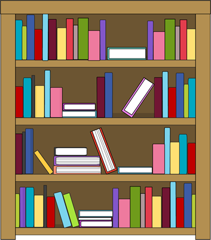

Reading is my SUPERPOWER!
Site Navigation List
The Reading Mother by Strickland Gillilan
I had a mother who read to me
Sagas of pirates who scoured the sea,
Cutlasses clenched in their yellow teeth,
"Blackbirds" stowed in the hold beneath.
I had a Mother who read me lays
Of ancient and gallant and golden days;
Stories of Marmion and Ivanhoe,
Which every boy has a right to know.
I had a Mother who read me tales
Of Gelert the hound of the hills of Wales,
True to his trust till his tragic death,
Faithfulness blent with his final breath.
I had a Mother who read me the things
That wholesome life to the boy heart brings--
Stories that stir with an upward touch,
Oh, that each mother of boys were such!
You may have tangible wealth untold;
Caskets of jewels and coffers of gold.
Richer than I you can never be--
I had a Mother who read to me.
(This poem is in the public domain.)